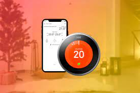
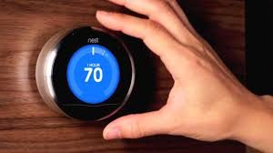

Información
Estos termostatos se conectan a la caldera y/o aire acondicionado de tu hogar y regulan la temperatura del mismo controlando estos elementos. Hasta aquí nada nuevo en relación a los termostatos convencionales. Sin embargo, los termostatos inteligentes han venido para conocerte.
Es decir, para saber cuál es tu temperatura ideal en casa y para saber cuando estás y cuando no. Para de esta manera aprender de tu comportamiento y regular la temperatura del hogar para que te ayude a ahorrar tanto energía como dinero.
Es un dispositivo que te permite ahorrar energía eléctrica. La domótica permite controlar sistemas eléctricos de la casa de forma remota. Su uso es muy sencillo, además de poder utilizarlo a través de un smartphone estando fuera de casa.
El uso que se le da a los termostatos inteligentes ha cambiado la manera de gestionar la calefacción en nuestras viviendas. Ahora se puede encender la calefacción antes de llegar a casa, así no se gasta energía mientras la casa está vacía.
Funcionamiento
Los termostatos inteligentes tienen el mismo funcionamiento de un termostato convencional. Pero además incorporan opciones Smart que le permite aprender rutinas, horarios y configuraciones para controlar la temperatura según las preferencias del usuario. Este tipo de dispositivos no solo nos hacen más fácil la vida, sino que además permiten ahorrar electricidad o gas, lo que repercute directamente en la economía personal o familiar.
Compatibilidad con la caldera: Asegúrate que el termostato sea compatible con tu caldera o aire acondicionado, ya que, de lo contrario, habrás hecho una mala compra.
Tipo de termostato inteligente: Aunque ya un termostato inteligente con Wifi tiene numerosas funciones que puedes aprovechar, existen otros dispositivos mucho más avanzados que incorporan opciones como la geolocalización o detector de movimiento. Elige el que mejor se adapte a tus necesidades y presupuesto.
Movilidad del dispositivo: Encontrarás termostatos inteligentes fijos y móviles. Estos últimos te permitirán controlar la temperatura desde cualquier parte de la casa. Aunque, si se pueden configurar desde un teléfono móvil este requisito no será necesario.
Modo de instalación: En el mercado encontrarás opciones con cables de fácil instalación, y otras más sencillas aún como los termostatos inteligentes inalámbricos.
Funciones inteligentes: Elige el termostato inteligente que mejor se adapte a tus necesidades. Por ejemplo, si quieres disfrutar de la temperatura ideal al llegar a casa, opta por un termostato inteligente con Wifi que puedas controlar de manera remota.
Precio: El precio de los termostatos inteligentes pude variar dependiendo de las funciones que incorpora, su marca y la calidad de los materiales con los que está fabricado.
Instalacion
El termostato wifi inteligente es un dispositivo que se puede comprar a diferentes marcas que, en ocasiones, incluyen la instalación en el precio. Así, podemos contratar a un instalador o podemos instalarlo nosotros mismos si tenemos los conocimientos necesarios.
En el regletero de nuestro nuevo dispositivo inteligente podemos encontrar conexiones tanto para la calefacción como para el sistema de aire acondicionado.
Otro aspecto de la instalación es que el dispositivo smart necesita de una conexión de alimentación eléctrica para funcionar. Para ello, se deberá llevar un cable de alimentación eléctrica hasta el dispositivo. Una vez realizadas todas las conexiones, el sistema está listo para funcionar.
Es importante recordar que los termostatos en general tienen en cuenta qué tipo de caldera se está utilizando para regular de forma apropiada nuestro sistema.
Ventajas
Ahorro en el consumo, ya que cuenta con programaciones horarias, sistemas de mejora de eficiencia o modos de ahorro, ecológicos y de bajo consumo.
Acceso al sistema desde cualquier punto.
Control sobre los datos de consumo instantáneos o acumulativos.
Adecuación a cada tipo de instalación, haciéndola funcionar de forma óptima.
Aprendizaje de los hábitos de consumo y propuesta de mejoras.
Desventajas
Más caro: Los termostatos inteligentes suelen costar un poco más caros que los tradicionales porque cuentan con una tecnología más avanzada y completa.
Funcionamiento con pilas o baterías
Compatibilidad del dispositivo con calderas y asistentes de voz:
¿TE HA SOLUCIONADO TUS DUDAS?